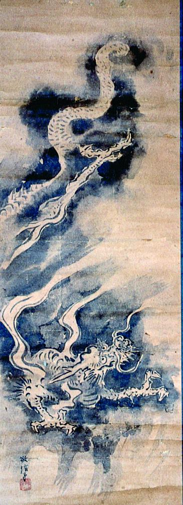

← 图鉴索引

雲間に浮かぶ龍。
著作者：敬信／出典：親書誌：A5_pushkin_0056：（雲龍図；ウンリュウズ）／日付：2011／資源識別子：A5_pushkin_0056_0001_0000
Copyright (c)2010- International Research Center for Japanese Studies, Kyoto, Japan. All rights reserved.